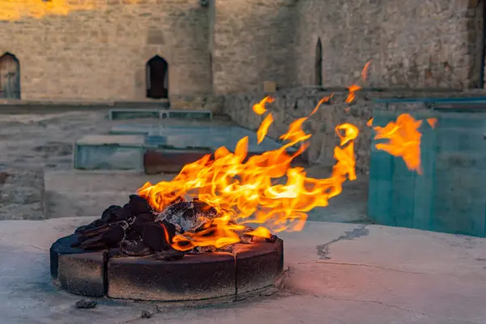

Ancient Tower of Silence in Yazd, Iran - circular stone structure on elevated ground
Towers of Silence, known as Dakhmas in Persian, are circular raised structures used for a unique funeral ritual practiced by Zoroastrians.
Elevated stone platforms exposed to the sky and elements
Traditional funeral method of the Zoroastrian faith
Practice of sky burial or excarnation
Bodies are left for scavenger birds, primarily vultures
A practice dating back over 3,000 years
QUESTION 1
What is the Religion?
Zoroastrianism

Sacred fire burning in a Zoroastrian fire temple - fire is one of the four sacred elements
One of the world's oldest monotheistic religions, founded by the prophet Zoroaster (Zarathustra) in ancient Persia around 1500-1000 BCE.
Core Beliefs:
One Supreme God: Ahura Mazda (Wise Lord)
Sacred Elements: Fire, water, earth, and air are pure and must not be polluted
Good Thoughts, Good Words, Good Deeds: Central ethical principle
QUESTION 2
Who Performs the Ritual?
The Practitioners:
Zoroastrian Priests (Mobeds): Recite prayers and oversee the religious aspects
Corpse-bearers (Nasassalars or Khandhias): Specially trained individuals who handle the body
Family Members: Participate in initial prayers but do not touch the body
Community Members: Follow at a distance during the procession
QUESTION 3
What is the Ritual?
Actions Involved:
Preparation: Body is washed, dressed in white sudra (sacred shirt) and kusti (sacred cord)
Sagdid Ceremony: A dog views the body to confirm death and ward off evil spirits
Procession: Corpse-bearers carry body on iron bier to the tower
Exposure: Body placed in designated ring (men outer, women middle, children inner)
Excarnation: Vultures consume the flesh within hours
Final Rest: Bones bleached by sun, then placed in central ossuary pit
Prayers:
Priests recite sacred prayers including the Patet (prayers of repentance) and Ahunavar (most sacred prayer) throughout the ritual.
QUESTION 4
When is it Performed?
Timing of the Ritual:
As Soon as Possible: Ideally within 24 hours of death
Time of Day: Traditionally performed during daylight hours when vultures are active
Avoiding Night: Night is associated with evil spirits in Zoroastrian belief
The ritual is performed year-round whenever a Zoroastrian dies, regardless of season, month, or religious holidays.
QUESTION 5
Where is it Performed?
Specific Locations (Towers):
Mumbai, India: Malabar Hill - most famous active site with multiple towers
Yazd, Iran: Historical towers (largely inactive but preserved)
Karachi, Pakistan: Limited active use
Zoroastrianism is mainly practiced in India (Parsi community) and Iran (birthplace of the religion). Diaspora communities exist in Western countries but cannot practice sky burial due to legal restrictions.
QUESTION 6
What is the Purpose?
Religious Reasons:
Protecting Sacred Elements: Burial pollutes earth, cremation pollutes fire, water burial pollutes water. Sky burial keeps all elements pure
Preventing Evil Contamination: The body is possessed by demons of decay and must not touch sacred creation
Facilitating Soul's Journey: Quick disposal helps the soul (urvan) travel to the afterlife - the Chinvat Bridge and House of Song (paradise)
Spiritual Philosophy:
Ecological Harmony: Returns body to nature in the purest way
Equality in Death: All decompose the same way, regardless of wealth or status
Speed of Transition: Rapid disposal helps soul's journey
Humility: The body is temporary; only the soul and one's deeds matter
Conclusion: Towers of Silence Today
Modern Challenges:
Vulture Decline: Environmental toxins have devastated vulture populations (99% decline in India)
Urbanization: Cities encroaching on traditional tower sites
Today, some communities use cremation or solar concentrators as adaptations.
SLIDE 1 - Portada (10 seg)
"Good morning. Today I'll talk about the Towers of Silence, a sacred funeral ritual in Zoroastrianism."